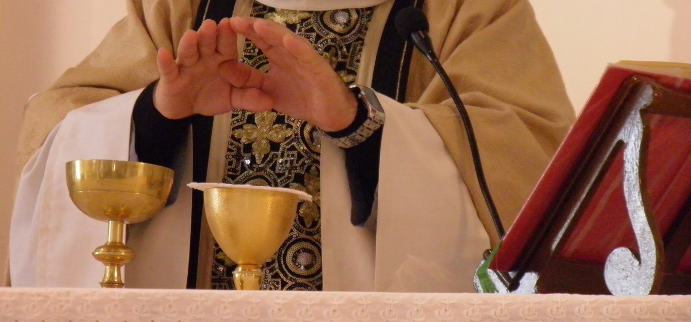

"Jesús les contestó: Yo soy el pan de la vida: el que viene a mí no pasará hambre, el que cree en mí no pasará nunca sed"
Juan 6, 35
LA COMUNIÓN, ES RECIBIR A JESÚS SACRAMENTADO
La Eucaristía es el sacramento del Cuerpo y de la Sangre de Cristo. En la comunión se recibe a Cristo, el alma se llena de gracia y se nos da una prenda de la gloria futura.
La Eucaristía es "fuente y culmen de toda la vida cristiana". Los demás sacramentos, como también todos los ministerios eclesiales y las obras de apostolado, están unidos a la Eucaristía y a ella se ordenan.
Documentación Niños(as):
- Fotocopia de la partida de nacimiento del niño(a).
- Fotocopia de tarjetas de identidad de los padres.
- Constancia de Bautismo (Original).
- Ofrenda.
Documentación Adultos:
- Fotocopia de la partida de nacimiento y de la tarjeta de identidad.
- Constancia de Bautismo (Original).
REQUISITOS PARA RECIBIR LA COMUNIÓN
Confesión
- Estar en gracia con Dios.
- Confesar antes cualquier pecado grave.
Guardar Ayuno
- Guardar ayuno una hora antes de la Eucaristía.
- Sólo se pueden consumir medicamentos y agua. Sin embargo, las personas de edad avanzada o enfermas, y asimismo quienes las cuidan, pueden recibir la santísima Eucaristía aunque hayan tomado algo en la hora inmediatamente anterior.
Saber a quién recibimos
- Recibir antes la catequesis.
- Reconocer la presencia viva de Jesús en la Eucaristía.